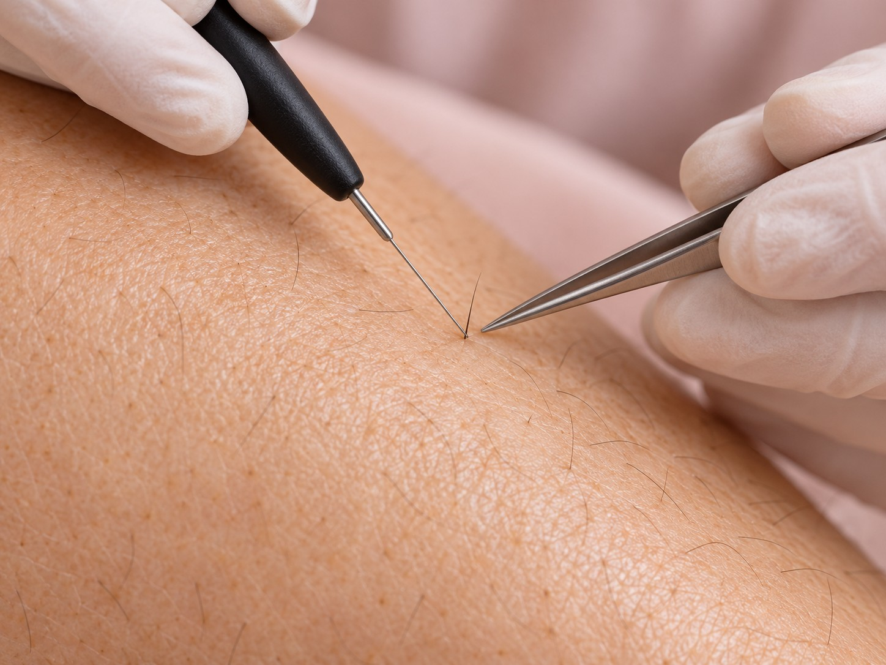

Service 01 · Nicole’s Electrolysis and Esthetics
Electrolysisin Kelowna.
Permanent hair-removal appointments for face, body, and Brazilian or bikini areas, plus a free consultation.

Available services
Choose the service that fits.
Current options and prices listed in Nicole’s Vagaro service menu.
Free consultationFree
Electrolysis · Face / body · 15 minutes$45
Electrolysis · Face / body · 30 minutes$55
Electrolysis · Face / body · 45 minutes$75
Electrolysis · Face / body · 60 minutes$85
Electrolysis · Face / body · 90 minutes$145
Electrolysis · Face / body · 2 hours$180
Electrolysis · Brazilian / bikini / upper legs · 15 minutesFrom $50
Electrolysis · Brazilian / bikini / upper legs · 30 minutes$70
Electrolysis · Brazilian / bikini / upper legs · 45 minutes$85
Electrolysis · Brazilian / bikini / upper legs · 60 minutes$95
Electrolysis · Brazilian / bikini / upper legs · 90 minutes$180
Electrolysis · Brazilian / bikini / upper legs · 2 hours$200
Prices shown in CAD as listed on Vagaro and may change. Please confirm the current price and service details when booking. Some services may require a consultation.
Ready to book?
Choose a time with Nicole.
View current availability and complete your booking through Vagaro.